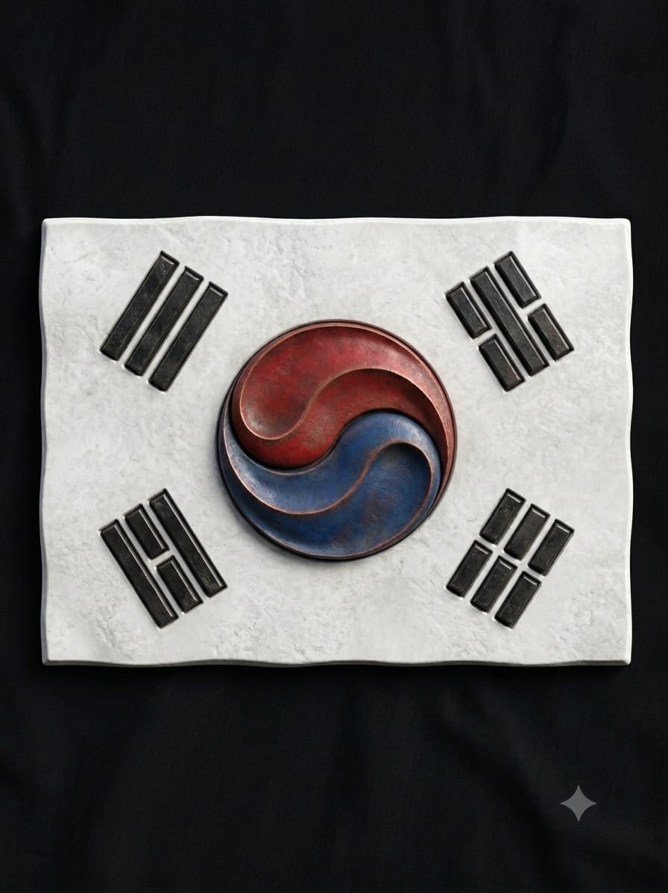

⛩️ GUMKIDO AMK ⛩️
Velocidad, fuerza, suavidad
GIONES
Tu navegador no soporta el elemento de video.
1. GION BLANCO GUMDO IL GION
Giones
Tu navegador no soporta el elemento de video.
2. GION AMARILLO GUMDO I GION
Giones
Tu navegador no soporta el elemento de video.
3. GION VERDE GUMDO SAM GION
Giones
Tu navegador no soporta el elemento de video.
4. GION AZUL GUMDO SA GION
Giones
Tu navegador no soporta el elemento de video.
6. GION I DAN GUMKIDO RYUK GION
Giones
TÉCNICAS
Tu navegador no soporta el elemento de video.
4. Tecnica AZUL
Técnicas